The Lady and I just returned from a 12-day trip to Ireland (with a stop at the very start in Kent, England, to visit some dear friends and their 6-month old twins!).
{kind=link}
I can’t begin to describe how incredible the trip was. It was one of those dreams you realize at some point you’ve been discussing with your significant other for years–quips here and there about “wouldn’t it be awesome to visit x” or “when we visit y someday…”. Ireland had been at the top of our list of international locations to see since years before we even got married, but it was always 5-10 years in the future, and never got any closer to reality.
Until that dear friend’s wedding in Bedford, England, in late summer 2017. At some point during some downtime in that long weekend, Ireland came up again in the same way it always did, but whether it was the international setting we were already in or some other twist of fate, The Lady suddenly said: “Let’s set a date.”
That day in August 2017, we set a tentative, but actual, date of May 2019. And we nailed it.
Overview
The logistics of the trip were pretty complicated. First, we wanted to fly into London and spend a day visiting those friends of ours out in Kent. Next, we wanted to start our journey in Ireland by spending a few days in Dublin.
From there, we wanted to hike in Wicklow National Park before spending a few days in Killarney, exploring the Ring of Kerry (important note: not a “ring” as in a piece of jewelry).
Finally, we wanted to drive to Galway and spend a few days there, before returning to Dublin and flying back home.
tl;dr A travel agent will make your life a lot easier when your international travels have a lot of moving parts.
The Emerald Isle
The country was seriously amazing. Ireland is the most incredible combination of different landscapes and ecosystems all coexisting side by side; driving from Dublin to Killarney to Galway and back will show multiple distinct countrysides that change seamlessly yet suddenly.
Without further adieu, I’ll post some of my favorite pictures here from the trip.
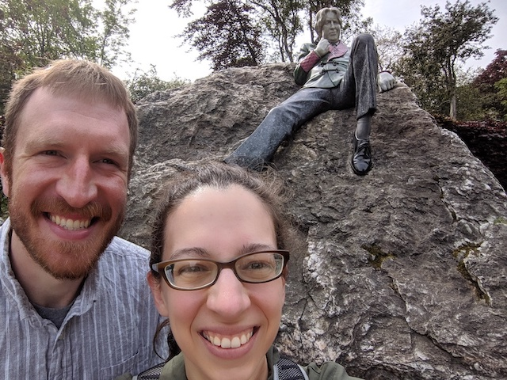
In front of the Oscar Wilde statue in Dublin.
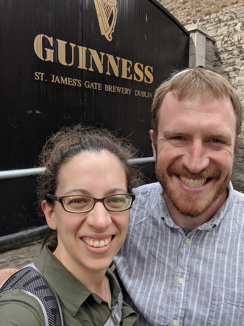
The Guinness Storehouse in Dublin.
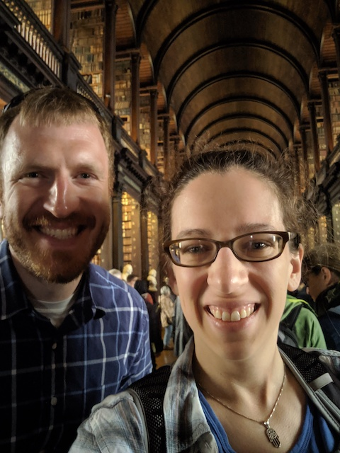
In the Book of Kells exhibit at Trinity College in Dublin.
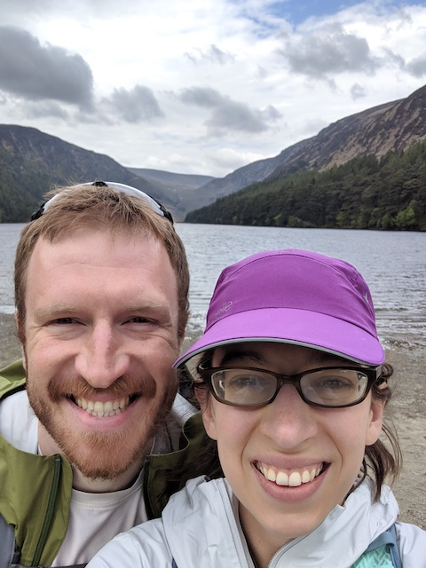
At Wicklow park, before a 9-mile hike.
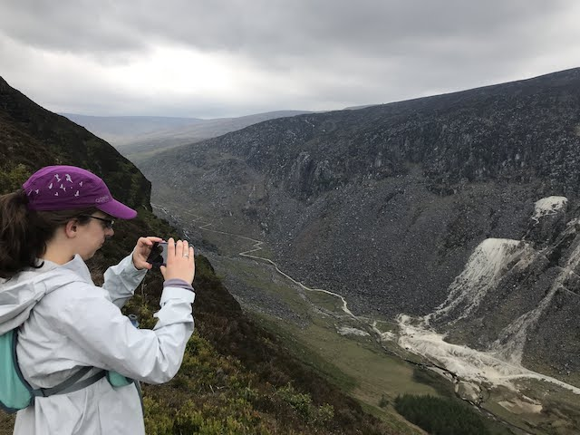
Also Wicklow park, about halfway through the hike.
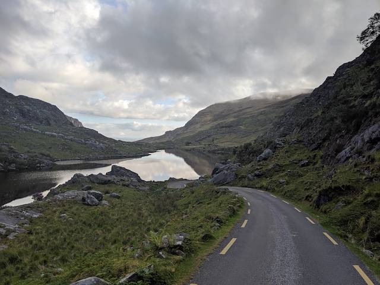
Running the Gap of Dunloe in Killarney.
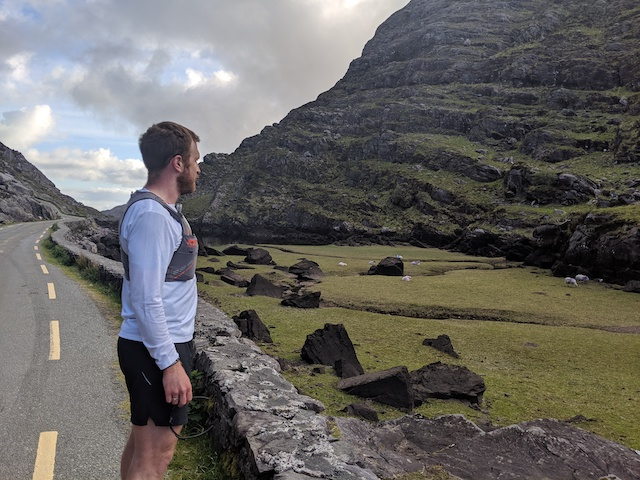 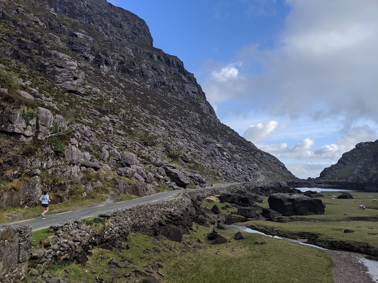
The Lady and myself running in the Gap.
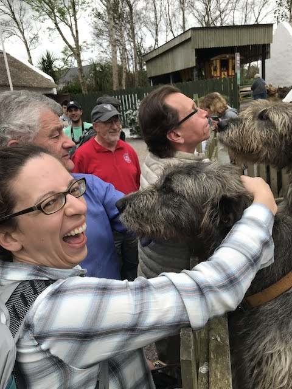
The Lady meets an adorable Irish wolfhound during our Ring of Kerry tour.
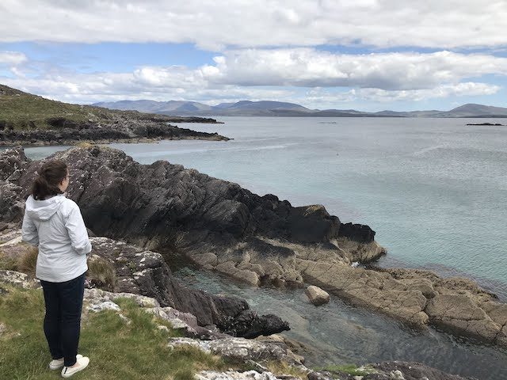
Coastline stop along the Ring of Kerry tour.
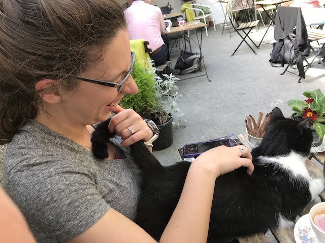
We met a very friendly regular at the Secret Garden in Galway.
Sitting in the main square at Galway.
Citation
@online{quinn2019,
author = {Quinn, Shannon},
title = {Quinnwitz in {Ireland}},
date = {2019-06-03},
url = {https://magsol.github.io/2019-06-03-quinnwitz-in-ireland},
langid = {en}
}